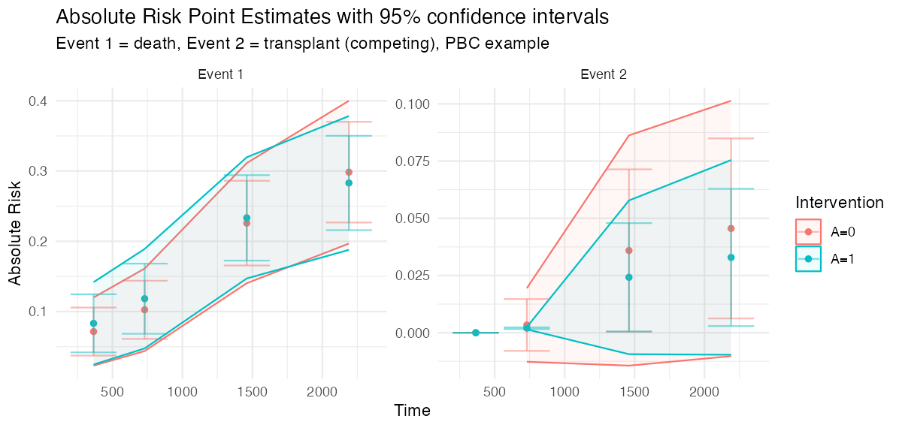
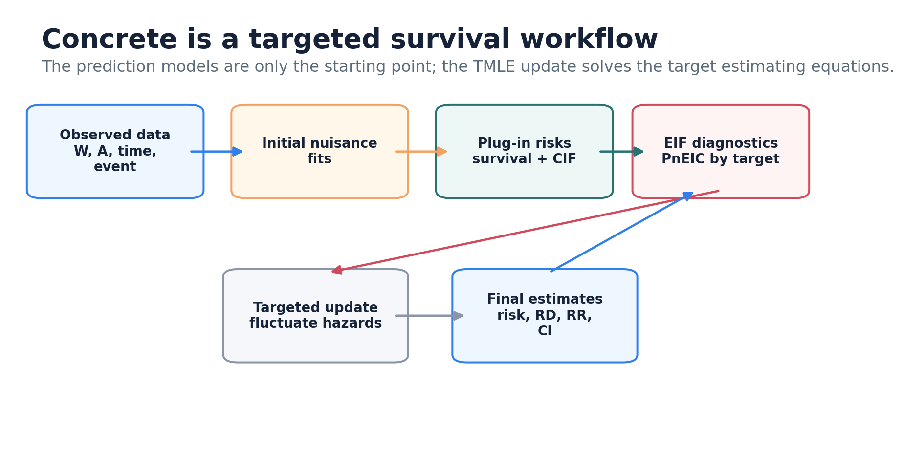
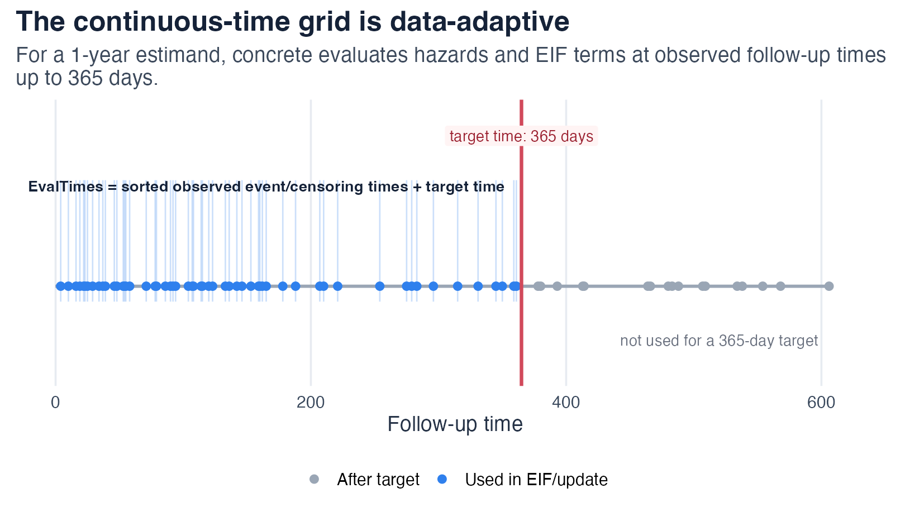
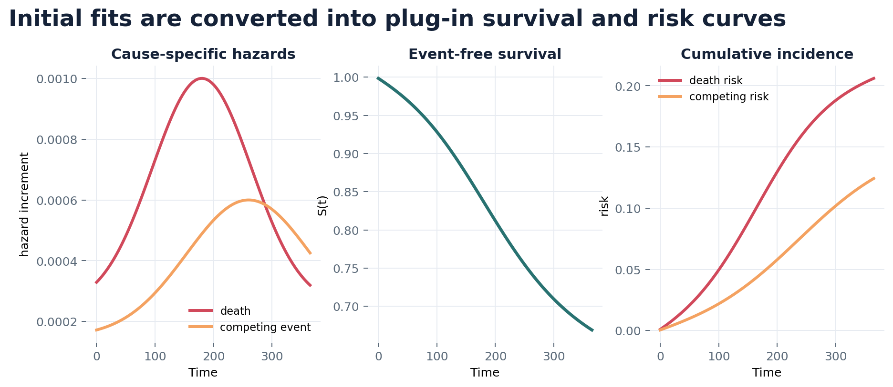
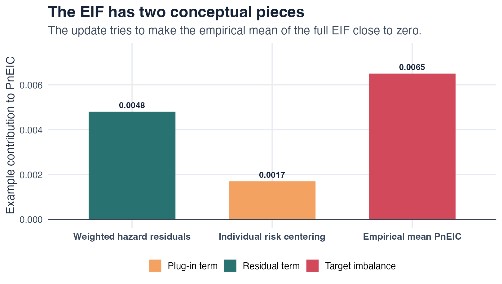
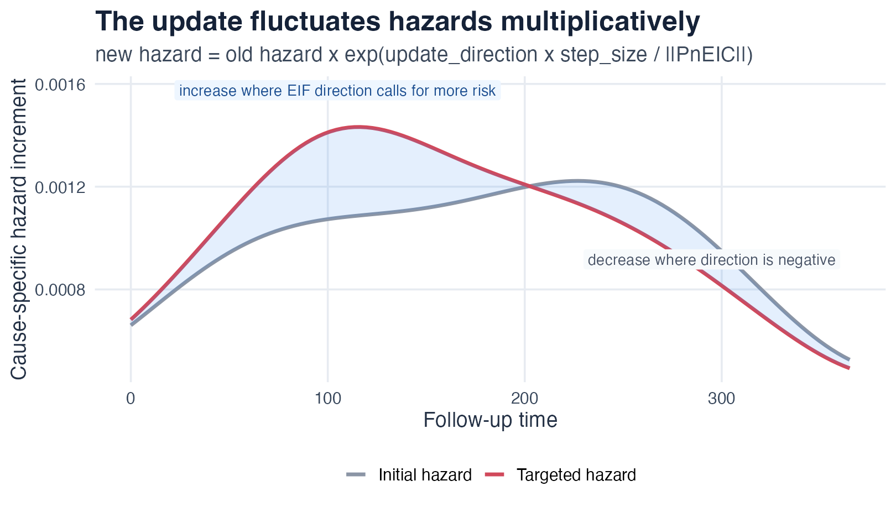
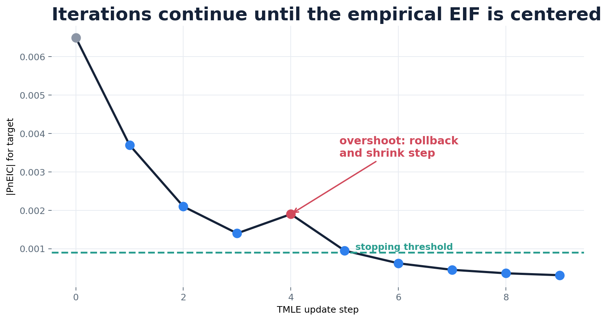
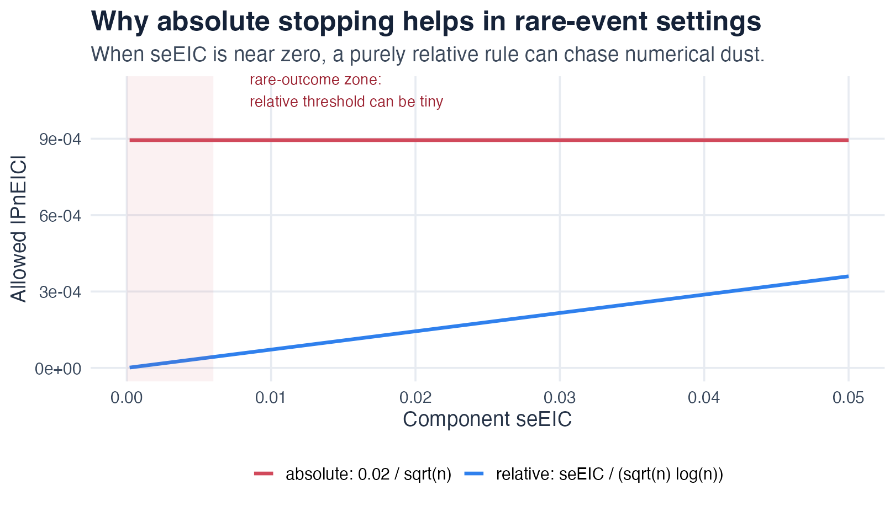

This article explains what concrete computes and how the
algorithm gets there. It is written for analysts who want intuition for
the estimator behind the trial outputs, without reading the full methods
paper. The schematic figures below are teaching illustrations of the
algorithm, not simulation results; see the Simulation evidence article for
empirical bias and coverage.
The method is one-step continuous-time targeted minimum loss-based estimation (TMLE) for cause-specific absolute risks, following Rytgaard et al. (2023) and Rytgaard and van der Laan (2023).
The target: a covariate-adjusted absolute risk
For a binary baseline treatment a and baseline
covariates W, the conditional cause-j absolute
risk by time t is the cumulative incidence
where
is the cause-j hazard and
is the overall event-free survival across all
competing events. The trial estimand is the marginal risk under an
intervention, averaged over the covariate distribution:
and from a pair of interventions concrete reports the
risk difference and risk ratio.
Censoring is treated as a competing event (0) and handled
through inverse-probability-of-censoring weighting inside the estimator,
not by discarding censored subjects.
With competing risks, each event gets its own cause-specific
cumulative incidence. The figure below is real concrete
output on the PBC example, with death (event 1) and transplant (event 2,
the competing event) targeted jointly:

The pipeline

concrete runs four stages:
-
Estimate nuisance parameters. A treatment Super
Learner estimates the propensity score
pi(a | W); event-specific and censoring hazard libraries (Cox, Coxnet, random survival forests, additive hazards, HAL) are fit with cross-validated selection. - Form the initial plug-in. The hazards are turned into per-subject cumulative-incidence curves and averaged to a first estimate of each risk.
- Target. A small multiplicative update is applied to the hazards, repeatedly, to solve the efficient-influence-function (EIF) estimating equation for the requested risks.
- Report. Point estimates, influence-function standard errors, and pointwise plus simultaneous confidence intervals for risks, differences, and ratios.
Step 1-2: an event-time grid and an initial plug-in
Continuous-time hazards are evaluated on the grid of observed event/censoring times together with the requested target times.

Cumulating the hazards along this grid gives each subject’s plug-in cumulative-incidence curve; averaging over subjects gives the initial risk estimate. This plug-in is consistent only if the hazard models are correct, and it is generally biased for the marginal risk because the learners optimize hazard fit rather than the target.

Step 3: the efficient influence function
TMLE removes the plug-in bias by solving the EIF estimating equation.
For target event j and time t, the EIF of each
subject has three conceptual pieces:

The clever covariate
weights each cause-l hazard residual by how much that
hazard, at time s, moves the cause-j risk at
time t:
The first factor is the treatment/censoring weight — the intervention
propensity
over the observed propensity
and the lagged probability of remaining uncensored
.
The MinNuisance bound is applied to this denominator to
keep the weight stable under near-positivity violations. The empirical
mean of the EIF over subjects, PnEIC, measures how far
the current estimate is from solving the estimating equation; the update
drives it toward zero.
Step 3: the targeting loop
concrete does not re-fit the hazards. It applies a
single multiplicative fluctuation to every
cause-l hazard, in the direction that most reduces the
PnEIC, with a small step size
:

After each step the survival, cumulative incidence, and EIF are
recomputed and the norm of the PnEIC is checked. The
"adaptive" update method backtracks the step size whenever
a step would increase the objective, so the norm decreases
monotonically.

Step 3: when to stop
The loop stops when every targeted component has a small enough
PnEIC. The relative rule compares |PnEIC|
to its own standard-error scale,
seEIC / (sqrt(n) * log(n)). In rare-event or competing-risk
targets this threshold can become numerically tiny, so an
absolute rule
(|PnEIC| <= EICStopAbsTol, default
0.02 / sqrt(n)) is often more stable; the
hybrid rule takes the larger of the two.

getTmleDiagnostics() reports, per component, the
PnEIC, the active StopCriteria, their
ratio, and whether the check passed. The Convergence diagnostics article
shows how to read these and what to change when a fit does not converge
cleanly.
Step 4: inference
The estimated EIF is also the basis for inference. The standard error
of each risk is the influence-function standard deviation over
sqrt(n). Risk differences and risk ratios use the paired
per-subject influence functions of the two interventions (a delta-method
transform for the ratio), so the correlation between arms is accounted
for. With more than one target time,
getOutput(Simultaneous = TRUE) adds simultaneous confidence
bands using a multiplier-bootstrap maximum over the correlated component
influence functions.
Where to go next
- Trialist quickstart: run it on your data.
- Learner library: choose nuisance learners.
- Convergence diagnostics: read and fix the stopping diagnostics.
- Simulation evidence: empirical bias and coverage.